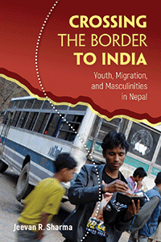

<HTML><head>
<meta name='robots' content='noindex,nofollow' /><script> (function(i,s,o,g,r,a,m){i['GoogleAnalyticsObject']=r;i[r]=i[r]||function(){  (i[r].q=i[r].q||[]).push(arguments)},i[r].l=1*new Date();a=s.createElement(o),  m=s.getElementsByTagName(o)[0];a.async=1;a.src=g;m.parentNode.insertBefore(a,m)   })(window,document,'script','//www.google-analytics.com/analytics.js','ga');   ga('create', 'UA-43183130-1', 'temple.edu');   ga('send', 'pageview'); </script><title>Jeevan R. Sharma: Crossing the Border to India - Print</TITLE><link rel="stylesheet" href="../general.css" type="text/css"><SCRIPT LANGUAGE = JAVASCRIPT></SCRIPT></HEAD><BODY LINK="#3152A5" VLINK="#3152A5" ALINK=Gray BGCOLOR=White>
	
	<CENTER><P CLASS=intro><br>How the changing political economy of rural Nepal informs the desire and agency of young male migrants who seek work in cities<br><br></P></CENTER><br>
	
	&nbsp;<!--none//--><Table width="100%" border=0 cellspacing=5><tr><td width="175" align="center"></td><td>
	
	<h1 class = "booktitle">Crossing the Border to India</h1> 
	<h1 class = "subtitle">Youth, Migration, and Masculinities in Nepal  </h1>
	<h3 class="author">Jeevan R. Sharma </h3>
	<p class="info">
	<p class="info">cloth EAN:  978-1-4399-1426-7 (ISBN:1-4399-1426-5)</br>$69.50, Jul 18, <font color=#990033>Available</font><br>
	<p class="info">Electronic Book EAN: 978-1-4399-1428-1 (ISBN:1-4399-1428-1)</br>$69.50, Jul 18, <font color=#990033>Available</font><br>
	<p class="info">192 pp, 5.25 x  8.5, 3&nbsp;figures 3 figs., 1 maps</p></td></tr></table></P></td></tr></table><BR>
	
		<BLOCKQUOTE><p><i>"Sharma's </i>Crossing the Border to India <i> is a sensitive ethnography that conveys what it is like to be a Nepali migrant in India. Especially valuable is the fact that gender (masculinity) and the life course are central to this cultural account of a phenomenon that has hitherto been dominated by quantitative analyses. The vignettes are excellent and the characters are recognizable throughout the book."</i><br>&#8212;<b>David N. Gellner</b>, Professor of Anthropology, University of Oxford, author of <i>The Anthropology of Buddhism and Hinduism: Weberian Themes</i>, and editor of <i>Borderland Lives in Northern South Asia</i><br></BLOCKQUOTE>
	
	<P><p>Given the limited economic opportunities in rural Nepal, the desire of young men of all income and education levels, castes, and ethnicities to migrate has never been higher. <i>Crossing the Border to India</i> presents an ethnography of male labor migration from the western hills of Nepal to cities in India. Jeevan Sharma shows how not only livelihood and gender but also structural violence impact a migrant's perceptions, experiences, and aspirations. <br/><br/>Based on long-term fieldwork, this study captures the actual experiences of those who cross the border. Sharma shows that Nepali migration to India not only allows young men from poorer backgrounds to "save there and eat here" but also offers them a strategy for escaping the more regimented social order of the village. Additionally, migrants may benefit from the opportunities extended by the "open border" between India and Nepal to attain independence and experience a distant world. In fact, however, Nepali migrants are regularly subjected to extreme ill-treatment. Thus, while the idea of freedom is an important factor in Nepali men's migration decisions, their actual experience often entails suffering and lack of freedom.<br>
		
		<P><h2  class="inpageheading"><A NAME="excerpt"></a>Excerpt</h2><p><A HREF="http://www.temple.edu/tempress/chapters_2400/2430_ch1.pdf">Read the Introduction (pdf).</A><br>
			
	
<P CLASS="top"><A HREF="#top">BACK TO TOP</A></P></p><P></P><P></b></p>
		
		<p><h2 class="inpageheading"><A NAME="contents"></a>Contents</h2><P><span style="font-family: 'Verdana';font-size: 13px;color: #211D1E;" >Note on Nepali Words and Nepali and Indian Currency <br/>Acknowledgments<br/><br/>Introduction <br/></span><span style="font-family: 'Verdana';font-size: 13px;color: #211D1E; " >1. </span><span style="font-family: 'Verdana';font-size: 13px;color: #211D1E;" >Political Economy of Rural Livelihoods <br/></span><span style="font-family: 'Verdana';font-size: 13px;color: #211D1E; " >2. </span><span style="font-family: 'Verdana';font-size: 13px;color: #211D1E;" >History and Culture of Migration in Nepal <br/></span><span style="font-family: 'Verdana';font-size: 13px;color: #211D1E; " >3. </span><span style="font-family: 'Verdana';font-size: 13px;color: #211D1E;" >Leaving the Hills <br/></span><span style="font-family: 'Verdana';font-size: 13px;color: #211D1E; " >4. </span><span style="font-family: 'Verdana';font-size: 13px;color: #211D1E;" >Border Crossing <br/></span><span style="font-family: 'Verdana';font-size: 13px;color: #211D1E; " >5. </span><span style="font-family: 'Verdana';font-size: 13px;color: #211D1E;" >Marginal Migrant Workers in Indian Cities <br/></span><span style="font-family: 'Verdana';font-size: 13px;color: #211D1E; " >6. </span><span style="font-family: 'Verdana';font-size: 13px;color: #211D1E;" >Migrant Risk Behavior in Mumbai <br/>Conclusion <br/> <br/>Notes <br/>References <br/>Index</span></P><P CLASS="top"><A HREF="#top">BACK TO TOP</A></P></p>
	
<P><H2  class="inpageheading"><A NAME="author bio"></a>About the Author(s)</H2><p><b>Jeevan R. Sharma</b> is Lecturer in South Asia and International Development at the University of Edinburgh.<br>
	
<P CLASS="top"><A HREF="#top">BACK TO TOP</A></P></P></P>

<P><h2 class="inpageheading"><a name="subjects"></a>Subject Categories</h2> 
	<p><a href="http://www.temple.edu/tempress/immigration.html" target="_top">Immigration</a> <br>
		<a href="http://www.temple.edu/tempress/asian.html" target="_top">Asian Studies</a> <br>
		<a href="http://www.temple.edu/tempress/race.html" target="_top">Race and Ethnicity</a> <br>
		<a href="http://www.temple.edu/tempress/anthropology.html" target="_top">Anthropology</a> <br>
		<a href="http://www.temple.edu/tempress/gender.html" target="_top">Gender Studies</a> </p></P>

<P><h2 class="inpageheading">In the Series</h2>
	<p><a target="_top" href="http://www.temple.edu/tempress/gy.html" OnMouseOver="window.status='Click for other books in this series!';return true;"OnMouseOut="window.status=" ><i>Global Youth</i></a></P><p><p>The <em>Global Youth</em> Book Series, edited by Craig Jeffrey and Jane Dyson, comprises research-based studies of young people in the context of global social, political and economic change. The series brings together work that examines youth and aspects of global change within sociology, anthropology, development studies, geography, and educational studies. Our emphasis is on youth in areas of the world that are often excluded from mainstream discussions of young people, such as Latin America, Africa, Asia and Eastern Europe, but we also welcome studies from Western Europe and North America, and books that bridge the global north and global south.</p></P></P></P>

<P CLASS="top"><A HREF="#top">BACK TO TOP</A></P></td><td width=2%>&nbsp;</td><td width=5>&nbsp;</td></tr></table><BR><font face="Arial" size="1"><a href="copyright.html" OnMouseOver="window.status='Web Copyright Policy';return true;" OnMouseOut="window.status=''" TITLE="Web Copyright Policy">&copy;</a> 2018 <a href="http://www.temple.edu" target="new" OnMouseOver="window.status='Link to Temple University home page';return true;" OnMouseOut="window.status=''" TITLE="Link to Temple University home page">Temple University</a>. All Rights Reserved. This page: http://www.temple.edu/tempress/titles/2430_reg.html</font></BODY></HTML>                    
